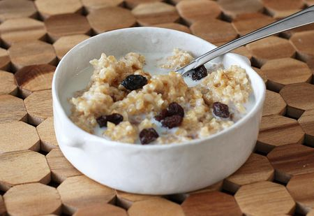

Smoothie

Description
It's an ideal recipe when you have no time to prepare a breakfast.
Full of nutrients and delicious recipe for an amazing beakfast. Super easy to make.
Ingredients
- 1 cup of your favourite cereals(eg. cornflakes, honey nuts oats)
- 1 banana
- 1 cup of drinkable yogurt
- 1/2 cup of nuts (again anyone you like or a mix of them)
Steps
- Just mix all the ingredients in a bowl with an spoon, add the yogurt, and you've your breakfast ready!!!